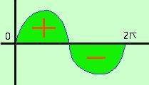

Area positiva e negativa
Come e' possibile che un'area quale quella che vediamo qui a fianco valga zero?

L'unica risposta logica da dare e' che l'integrale calcoli come positive le aree sopra l'asse delle x e come negative le aree situate sotto l'asse delle x